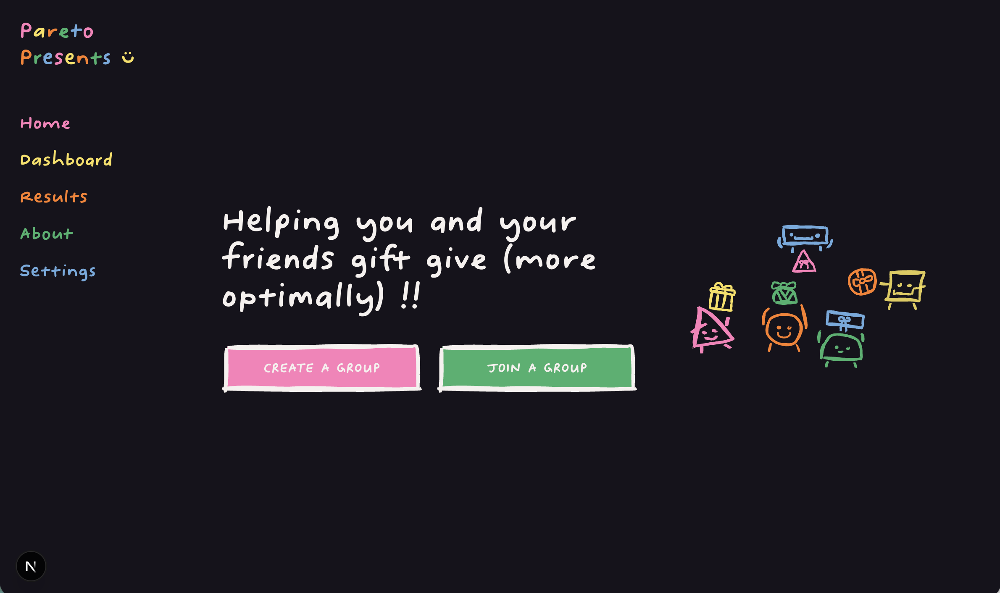

Pareto Presents

Pareto Presents is a project that showcases the intersection of art and technology, featuring a series of digital installations and interactive experiences. I was responsible for the overall concept, design, and execution of the project.
Through this project I've learned and practiced the front-end and back-end of web development, including:
- Backend, API, and databases (Supabase, FastAPI, Docker, Fly.io, React)
- Frontend and deployment (Next.js, Tailwind CSS, TypeScript, shadcn/ui, Vercel)
- Web design principles, UI/UX, branding, logo design (Figma, Procreate, Aseprite)